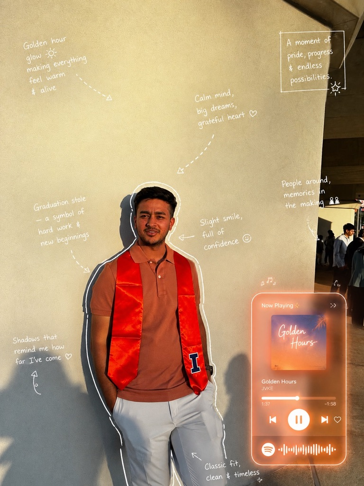

> CHECKING MEMORY... OK
> LOADING MODULES... OK
> CONNECTING TO NEURAL NET... OK

IDENTITY: Masters Student, Computer Science
LOCATION: University of Illinois Urbana-Champaign (UIUC)
PREVIOUS_AFFILIATION: Barclays Bank PLC (Graduate Analyst)
> MISSION: Bridge the gap between complex AI/ML models and real-world applications.
> SKILLS_DETECTED: Salesforce Marketing Cloud, AMPScript, SSJS, JIRA, Python, HTML, CSS, JavaScript,
NLP, ML.
> STATUS: Ready to solve impactful problems.
EFFICIENCY
COST_RED.
AWARDS
AUTOMATIONS
Peer QA
[FLUTTER] [NODEJS] [ML]
Employee management system integrated with ML-powered image detection for safety compliance verification.
ACCESS_MODULE >>[PYTHON] [VECTOR_DB] [NLP]
Published research on optimizing open-domain question answering systems for speed and accuracy.
VIEW_RESEARCH >>[REACT] [PYTHON] [AI] [NODEJS]
An intelligent AI Pokémon Strategist that mathematically optimizes your competitive team against the global meta.
VIEW_PROJECT >>Ready to initiate collaboration protocols?